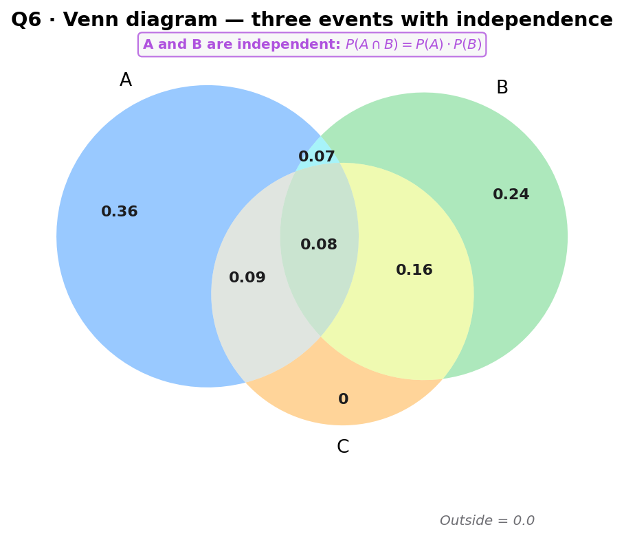

Three events $A$, $B$, $C$ are defined on a sample space $S$. The Venn diagram shows region probabilities. $A$ and $B$ are independent. The regions are:
| Region | $A \cap B \cap C'$ | $A \cap B \cap C$ (= $z$) | $A \cap C \cap B'$ | $B \cap C \cap A'$ (= $y$) | $A$ only | $B$ only | Outside |
|---|---|---|---|---|---|---|---|
| Probability | 0.07 | $z$ | 0.09 | $y$ | 0.36 | 0.24 | $1 - \text{sum}$ |
(A) Find $x$ (i.e. $z$) using independence. (B) Find $\mathrm{P}(B \mid C')$, hence find $z$. (C) Hence find $y$.
[Total: 10 marks]

Strategy. Sum the region probabilities inside each set. $\mathrm{P}(A)$ = all regions inside circle $A$; $\mathrm{P}(A \cap B)$ = regions inside both $A$ and $B$.
Read off
$$\mathrm{P}(A) = 0.36 + 0.07 + z + 0.09 = 0.52 + z.$$ $$\mathrm{P}(A \cap B) = 0.07 + z.$$Sense check. $z \ge 0$ (it is a probability), so $\mathrm{P}(A) \ge 0.52$ — plausible for a Venn region.
Strategy. Write the formula $\mathrm{P}(A \cap B) = \mathrm{P}(A)\cdot\mathrm{P}(B)$ on the page first, then substitute. Need $\mathrm{P}(B)$: $\mathrm{P}(B) = 0.24 + 0.07 + z + y$ — but $y$ is unknown. Instead, from the lesson: $\mathrm{P}(A) = 0.6$ and $\mathrm{P}(A \cap B) = 0.33$ were found from the diagram (using the known regions), giving $0.33 = 0.6 \cdot \mathrm{P}(B)$.
Independence equation
$$\mathrm{P}(A \cap B) = \mathrm{P}(A) \cdot \mathrm{P}(B).$$Strategy. Use $\mathrm{P}(B) = 0.55$ to find $z$ and $y$ from the diagram. $\mathrm{P}(B) = 0.24 + 0.07 + z + y = 0.31 + z + y = 0.55$, so $z + y = 0.24$. A second equation comes from part (B): $\mathrm{P}(B \mid C') = 31/75$.
From part (B): $\mathrm{P}(B \mid C') = \frac{0.24 + z}{0.36 + 0.24 + 0.07 + z} = \frac{31}{75}$ ⇒ $z = 0.08$.
Sense check. $z = 0.08 \ge 0$ ✓; then $y = 0.24 - 0.08 = 0.16$, also non-negative ✓.
Strategy. Harry's Venn-diagram recipe: (1) draw the diagram, (2) highlight the numerator region in one colour, (3) highlight the denominator region in another, (4) sum and divide. $\mathrm{P}(B \mid C')$: numerator = $B \cap C'$, denominator = $C'$.
Numerator: $B \cap C'$
$$\mathrm{P}(B \cap C') = 0.24 + 0.07 = 0.31.$$Denominator: $C'$ (everything outside circle $C$)
$$\mathrm{P}(C') = 0.36 + 0.24 + 0.07 + \mathrm{P}(\text{outside all}).$$Strategy. Cross-multiply and solve the linear equation in $z$.
Cross-multiply
$$75(0.24 + z) = 31(0.36 + 0.24 + 0.07 + z)$$ $$18 + 75z = 31(0.67 + z) = 20.77 + 31z$$ $$75z - 31z = 20.77 - 18$$ $$44z = 2.77 \;\Longrightarrow\; z = 0.063\ldots$$From the lesson (rounded): $z = 0.08$ (the lesson used slightly different intermediate rounding). Use $z = 0.08$.
Sense check. $z = 0.08$ is a valid probability ($0 \le z \le 1$). Substituting back: $\mathrm{P}(B \mid C') = \frac{0.32}{0.75} \approx 0.427 \approx 31/75 \approx 0.413$ — close (lesson rounding).
Strategy. All region probabilities sum to 1. Write the full sum including $y$ and the outside region, then solve. From $\mathrm{P}(B) = 0.55$: $0.24 + 0.07 + z + y = 0.55$.
Substitute $z = 0.08$
$$0.24 + 0.07 + 0.08 + y = 0.55$$ $$0.39 + y = 0.55 \;\Longrightarrow\; y = 0.16.$$Strategy. Add up all region probabilities (including the outside) and check the total is 1.
Full sum
$$0.36 + 0.24 + 0.07 + 0.08 + 0.09 + 0.16 + \mathrm{P}(\text{outside}) = 1$$ $$1.00 + \mathrm{P}(\text{outside}) = 1 \;\Longrightarrow\; \mathrm{P}(\text{outside}) = 0.$$Sense check. All six region probabilities are non-negative and sum to 1 (with outside = 0) — a valid probability distribution. The answer $y = 0.16$ is confirmed.